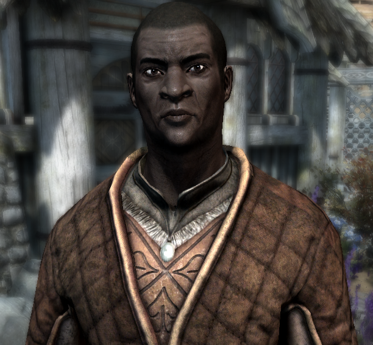
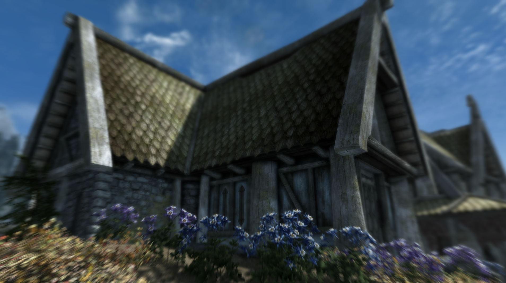
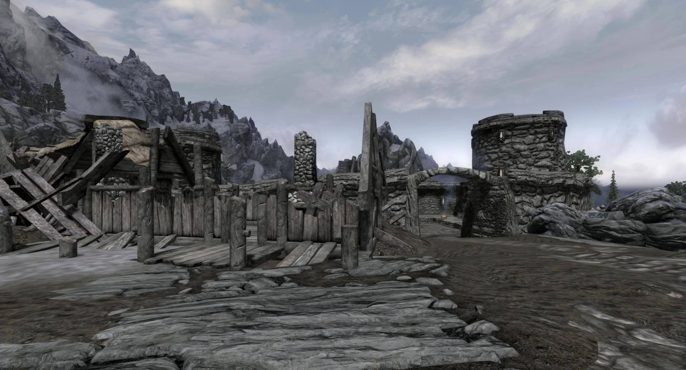

Whiterun Gazette
Have you been to the
Cloud District?

Of course not, but has Nazeem?
Ahlam's
revalations will shock you!
Help Wanted
- Ysolda is in the Market for a Mammoth Tusk
- Andur's lost his amulet and is offering a reward for it's recovery, last seen in the Catacombs
- Amren is searching for a long lost family heirloom, he is located at his residence for any wishing to inquire
- Carlotta Valentina would like Mikael to leave her alone lest he wishes to meet an ignoble end
Mansion on the Market
The luxurious Breezehome estate is now available to purchase after it's previous owner died at
the wrong end of a giants club. Located right next to the city gates, and right next door to
the celebrated Warmaiden's Blacksmith this house has everything a budding adventurer needs to corner
the market.
For a bargin price of 5000 Septims, further upgrades can be acquired for a mere 1800 septims more to
furnish a
kitchen, dining room, and even an alchemy lab or children's bedroom.
Eligible subjects who are interested are encouraged to contact Proventus Avenicci at their earliest
convienence
A Dragon Attack in Helgen?
Sources have claimed that a Dragon, once long thought to be extinct in Tamriel and the greater world at large have once again made an appearence in the province of Skyrim and have destroyed the small town of Helgen earlier this week. According to surviving Imperial Guards, the attack occurred shortly before the executuion of Ulfric Stormcloak, Jarl of Windhelm and leader of the rebellious faction known as The Stormcloaks. While the Imperial remnants insist that the Dragon was summoned by Ulfric, who is known to have the power of the Thuum, Stormcloak sources deny any such capacity of their military or leader, and that investigations are underway to determine the dragon's origins and possible motivations. Jarl Balgruf has put out a statement expressing sorrow for the loss of the city, however when asked about sending aid or supplies for rebuilding the community, he was unable to commit to any aid until the civil war had resolved itself. Thalmor agents were reached for comment but did not respond in time for publication.